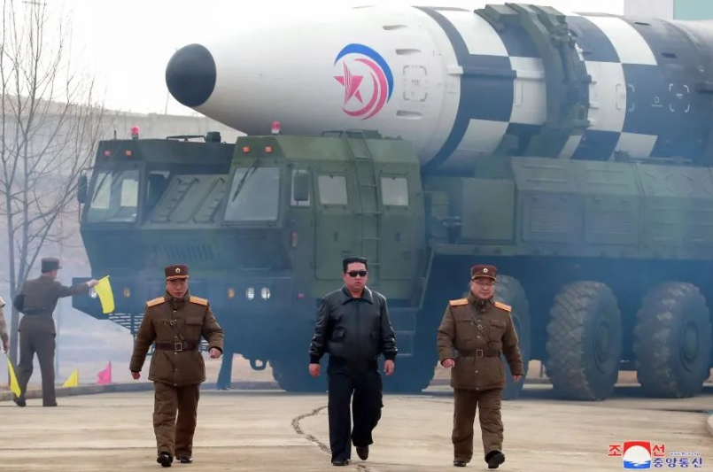
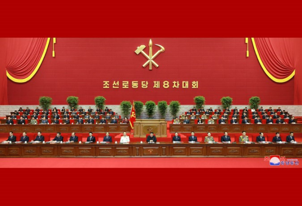
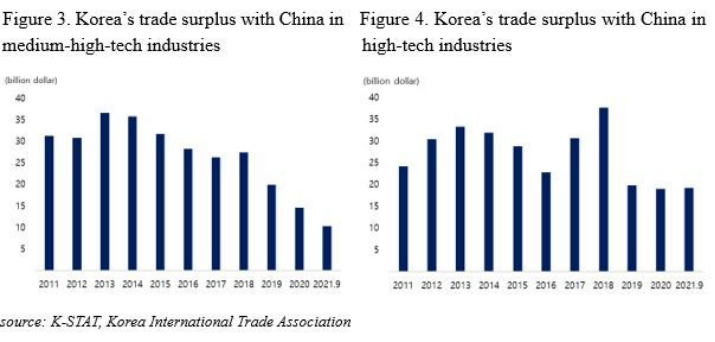

收录于合集
以下文章来源于欧亚系统科学研究会 ，作者李成日
欧亚系统科学研究会 .
让系统增值，为创新添砖

导读
朝鲜民主主义人民共和国于3月24日发射一枚洲际弹道导弹，首次违背其在2018年宣布暂停此类性质发射的承诺。朝鲜试射导弹再次牵动了关切半岛安全问题各方的敏感神经，当前俄乌冲突愈演愈烈，加上韩国新总统尹锡悦竞选过程一再表明将对朝鲜采取更强硬政策，令论者纷纷担忧朝鲜半岛安全困境存在“俄乌化”危险。就朝鲜半岛近期变局与俄乌冲突对东亚的影响，欧亚系统科学研究会采访了中国社会科学院亚太与全球战略研究院助理研究员李成日老师。
李成日认为， 朝鲜半岛对立和俄乌冲突的历史根源上有很大的不同，目前认定能否变成“俄乌化”有些为时尚早，需要进一步跟踪关注 。更重要的是，随着朝鲜劳动党八大召开，朝鲜试射导弹背后的政治逻辑已悄然转变。劳动党八大纲领制订了新的五年发展计划，强调了自力更生方针，试射导弹服务于凝聚力量、振奋士气、克服困难的国内政治目的。
“俄乌化”虽言之过早，但是俄乌冲突带来的连锁效应不应忽视。李成日指出， 以2022年5月拜登来访日本参与四方安全对话首脑会议为契机，日韩有可能会联手送给拜登一份“大礼”，满足美国的一些需求。美日韩加强协同的背景下，日韩传统“安美经中”的路线将发生深刻调整 。如何应对东亚地区政治经济逻辑的新转向，是中国未来需进一步思考的关键问题。欧亚系统科学研究会特编发此文，供读者思考。文章仅代表访谈人本人观点。
俄乌战引发中国东面生变
背后的新政治逻辑不容忽视

▲ 据朝中社当地时间25日报道，朝鲜于24日成功试射新型洲际弹道导弹“火星-17”型洲际弹道导弹。图源：朝中社
01
朝鲜半岛对立与俄乌冲突无法进行简单类比
欧亚系统科学研究会：尹锡悦当选韩国总统后，其“政治素人”身份引发对他是否能很好地处理外交政策的担忧。俄欧之间的安全困境最后演化为军事冲突，有观点认为，如果尹锡悦像泽连斯基一样能力不足、缺乏审慎，朝鲜半岛的安全困境也存在“俄乌化”危险。您认为朝鲜半岛与俄乌之间是否可以类比之处？
李成日 ：俄乌冲突虽然是同一个民族的两个国家之间围绕安全问题的武力冲突，但其背后由美国为首的北约触碰了俄罗斯国家安全的底线是根本原因，所以此次冲突带有一种代理战争的性质。朝鲜半岛分裂是冷战的产物，也是冷战的遗留物。美苏冷战结束后已经30多年，但冷战遗留下来的半岛的对立结构仍然没有得到改变，朝韩、朝美对立长期影响半岛局势的和平与稳定。俄、乌两国历史上都是前苏联的成员，他们的之间矛盾也是随着冷战结束、前苏联瓦解以后各自变成独立国家以后才开始显现出来的， 所以某种意义上俄乌矛盾是冷战后的产物，也是北约无限制东扩所造成的后果。因此，朝鲜半岛对立和俄乌冲突虽然本质上是安全问题而有些共同之处，但其历史根源上有很大的不同 。
随着乌克兰局势变成武力冲突以后，国内议论纷纷，甚至有些人指出朝鲜半岛存在“俄乌化”危险。当然，新的韩国当选总统尹锡悦在选举过程中，对朝问题上立场强硬，强调韩国的自主国防力量，甚至还主张有必要时采取“先发制人式”打击，引起了韩国国内外不少反响。 对此，最近美国国会调查局一份报告 （CRS，South Koreans Elect a New President, 2022.3.15） 指出，尹锡悦的“先发制人”主张可能相冲于美国对半岛紧张局势的控制政策。 因此，尹锡悦上任以后，半岛局势可能再次紧张，但能否变成“俄乌化”，目前认定有些为时尚早，需要进一步跟踪关注。
从尹锡悦的执政团队以及政治倾向来看，他将基本上继承李明博时期的“无核、开放、3000”和朴槿惠时期的“半岛信任进程”构想的基调。 而且，国民力量党议员朴振、前青瓦台国家安保室（NSC）第一次长赵太庸、前外交部第二次官金圣翰、前青瓦台对外战略企划官金泰孝等外交安全团队成员来看，也大都是李明博、朴槿惠时期的保守倾向人士，加上尹锡悦在竞选过程中的对朝强硬姿态，所以已经开始担忧尹锡悦新政府会不会对朝鲜采取强硬政策。但是，面临新冠疫情的影响，韩国大多国民希望首先解决国内问题，担心出现半岛局势紧张，进一步影响到国内经济的恢复。总之，朝鲜半岛的和平与稳定都有利于朝韩双方的根本利益，紧张的半岛局势不仅不利于朝韩双方，也会影响到半岛乃至东北亚局势。因此，促进对话，通过和平方式解决问题才是根本而有效的途径。
欧亚系统科学研究会：韩国学者白乐晴曾将朝鲜半岛南北分立的局面称为“分断体制”，并指出整个资本主义体系都从这个“分断体制”所生产的对立和敌意中得利。这是否意味着维持朝鲜半岛当前的对抗现状，对于美国来说更为有利？
李成日 ：朝鲜半岛分裂首先是日本殖民统治朝鲜半岛的产物。其次，二战结束时美苏两大国分别进驻朝鲜半岛南北，为各自的战略和利益，支持了南、北政权的建立。更重要的是，在日本殖民统治下朝鲜半岛的各种政治力量虽然致力于获得民族解放，但他们之间理念和路线都不同，始终未能形成统一的政治势力。朝鲜半岛获得解放以后，这种力量分别在南北地区成立了众多政党和组织，试图掌握半岛政局的主导权。虽然有些主张成立统一政府，但在美苏冷战的大背景和半岛内部政治力量严重分裂的情况下，1948年8月和9月先后在南部和北部地区成立了各自的政府。因此，韩国学者白乐晴教授对半岛内部的这种分立局面称为“分断体制”，而且1950-1953年朝鲜战争结束后，这种“分断体制”逐渐变为固化， 哪一方也不能以武力手段实现统一，形成了一种很特殊的所谓“敌对性共存”的局面 。
冷战结束后，半岛对立结构仍然严峻，未能实现国家和民族的统一，也是世界上冷战唯一遗留下来的“活火石”。实现民族的统一和和解是半岛地区人民的共同愿望，而半岛问题的本质是安全问题。半岛问题的重要相关方朝、韩、美都主张和平，支持统一，但他们之间的分歧很大。 其中最重要的是朝美对立和朝韩关系的不稳定，直接影响到半岛局势乃至东北亚地区的稳定。 过去的半岛局势以及脉络来看， 如果朝美关系得不到改善，朝韩关系寸步难行，所以有些人主张半岛局势的改善就取决于美国的态度 。美国在所谓半岛“分断体制”下确保了自身在东亚地区的战略利益，加上随着美国印太战略的推进，半岛的战略地位显得更重要，所以在半岛问题上不会轻易做出改变现状的措施。
目前，美国拜登政府向朝鲜提出“无条件”的对话，但没有采取实质性措施酝酿和平谈判的氛围，所以很难得到朝方的积极回应。其实， 需要解决半岛无核化等安全问题，必须跟建立半岛的和平问题密切联动在一起 。因此，中方提出的推进半岛无核化和构建和平机制同时并进的“双轨制”是比较合理的。目前朝鲜半岛局势很不明朗的局势下，各方应该为避免半岛局势“俄乌化”，认真考虑该地区的安全问题和和平问题，从大局出发重新推动半岛和平进程。
02
朝鲜试射导弹背后的政治逻辑已悄然转变
欧亚系统科学研究会：朝鲜2022年1月份进行7轮导弹试验，超过2021年总和。3月份，朝鲜又打破联合国决议，试射了洲际导弹。美国国务卿布林肯认为朝鲜的行动是“试图获得注意力”的表现。您如何看待此种评论？
李成日 ：2022年以来，朝鲜连续进行了10次导弹和侦察卫星的试验，对此议论纷纷。有些主张朝鲜试图引起美国的注意，迫使美国重新回到谈判桌上。还有些主张，朝鲜试射导弹和卫星是根据劳动党八大制定的军事强国的目标，是以自己的军事发展战略而逐步推进的，并没有直接跟施压美国有关。此外， 朝鲜试射导弹是为了振奋国内士气、凝聚政治力量，从而克服国际社会的经济制裁以及新冠疫情所带来的困难，因此是主要服务于国内政治目标的行为 。以上看来， 朝鲜的行为既有政治上的动因，也有军事上的目标，还有外交上的谈判筹码 。因此，朝鲜的导弹和卫星试射活动，并不能简单认为要引起美国的“注意力”。当然，由于乌克兰局势的持续，美国将相当一部分精力投入到欧洲地区，所以朝核问题可能在美国对外政策中的地位中会有所下降，但不能断定美国的战略重点能否完全转移到欧洲，需要进一步观察。
2019年2月朝美河内首脑会谈失败以来，朝美谈判停滞不前，而且朝韩关系也没有得到任何进展。2021年1月拜登政府上任以后，多次向朝鲜提出谈判建议，但朝方坚持要求美国放弃对朝敌对政策，所以双方之间一直没有回到谈判桌上。5月10日，韩国新总统尹锡悦即将上任，以此为契机半岛局势走向缓和，还是再次出现紧张，要拭目以待。

▲ 朝鲜劳动党第八次代表大会于2021年召开。图源：互联网
欧亚系统科学研究会：您提到朝鲜试射导弹有着国内政治的动因。能否进一步介绍一下朝鲜近期内政的新动向，以及这些动向会如何影响朝鲜半岛局势的发展？
李成日 ：2021年1月，朝鲜劳动党七大以后时隔五年举行了全党大会，八大确立了“人民群众第一主义”、自力更生、一心团结的政治理念，制定了新的国家经济发展五年计划。之后，朝鲜劳动党又相继举行了八届二中全会、三中全会、四中全会等一系列重要会议。在国内层面，继续加强党的唯一领导体系，推进集中全力进行经济建设的路线。虽然目前朝鲜面临困难重重，挑战也很多， 朝鲜劳动党提出“万里马速度”、“科学性自力更生”等口号，强调实现原材料和技术的国产化和自主化，大力推进改善民生的项目，积极动员全国人民继续迈进实现新的五年发展计划目标 。此外，朝鲜劳动党政治局里除了常委金德训（内阁总理）以外，中央书记处书记吴秀容、中央政治局委员朴正根（内阁副总理）、政治局后补委员杨胜虎、全贤哲等多名高干负责了经济部门建设，超过了之前的政治局人员中的经济负责人数。 由此可以看出，朝鲜确实高度重视经济建设，加大了在经济建设中内阁的中心作用。
值得关注的是， 2021年6月朝鲜首次向联合国提交了《朝鲜落实2030年可持续发展议程进展报告》 （DPRK , Voluntary National Review on the Implementation of the 2030 Agenda）。朝鲜此次向联合国提交可持续发展报告，不仅使外界能够通过该报告了解朝鲜的经济情况，更重要的是表明朝鲜已经开始摸索国际接轨，而且提出了2030年长期发展目标。
目前，朝鲜继续强调严厉的新冠肺炎疫情防控工作，继续采取基本关闭对外通道、严格戴上口罩等严厉措施。新冠肺炎疫情在世界范围内得到有效控制之前，朝鲜即使继续受到各种困难的影响，在短期内也很难恢复正常的对外交往。 在中美战略博弈日益加剧的情况下，朝鲜根据形势发展的需要，优先巩固和发展同中国等社会主义国家的关系。 这将继续限制和影响朝鲜的对外经济合作和经济建设。当前，朝鲜半岛局势仍不确定，朝美关系和朝韩关系都停滞不前。对朝鲜的国际制裁何时能够解除或缓和，是一个非常值得关注的焦点。
03
警惕日韩新政府联手送拜登“大礼包”
欧亚系统科学研究会：乌克兰危机让美国的注意力短期从亚太重新转移到欧洲，这是日韩所不乐见的，但另一方面，美国对乌克兰危机的回应是否果决，又会影响日韩对美国同盟承诺的信心，例如，日本外相林芳正在2月接受《华尔街日报》访谈时就表达了希望美国在乌克兰危机中采取坚决行动以“敲打”中国的意见。您认为俄乌冲突会对美国在亚洲的同盟关系产生什么影响？
李成日 ：俄乌冲突一爆发以后，日本的动作很快，紧跟美国对俄罗斯以及总统普京等实行了经济制裁。其实，2012年前首相安倍晋三重新执政以来，日本加快增强日美同盟的步伐，修改“日美防卫合作指针”和“武器出口三原则”等，首次制定了“国家安全保障法”，设置了国家安全保障会议，解除了集体自卫权等，在大大推进了实现“正常国家化”的进程。
随着乌克兰局势持续而不确定，日本担心美国将战略重点从印太转移到欧洲，所以在今年5月拜登出席于东京举办的四方安全对话（QUAD）首脑会议之际，试图拉拢美国紧紧捆绑在印太地区。值得注意的是，拜登此次出访日韩，对日韩来说可能是近期最重要的外事活动。从惯例而言，日本新任首相和韩国新任总统上任后都会先出访美国，但由于疫情影响，日本首相岸田文雄到现在也没去过美国， 因此，拜登是冷战结束后日本新任首相访美之前，先来访日本的第一位美国总统 。韩国新总统尹锡悦5月9号才就职，因此韩国也是第一次先迎来美国总统来访。
▲ 拜登在一月份与岸田文雄的虚拟峰会中确定访日行程，图源：美联社
以2022年5月拜登访韩为契机，日韩有可能会联手送给拜登“大礼包”，满足美国的一些需求。其一，进一步落实四方安全对话机制。 去年的四方安全对话会议成立了气候、疫苗专家、新兴技术三个工作组，这次四方安全对话首脑会议有可能比去年向前发展一步，将工作组更加机制化、实体化。韩国目前还不是QUAD成员，尹锡悦在竞选过程中多次表示有意加入QUAD，趁这次拜登来访，韩国有可能表示先参与QUAD机制下的这三个工作组，再谋求正式加入。
其二，改善日韩关系。 韩日关系改善是美国多年以来对两国盟国的希望和要求。今年5月下旬，拜登访日、访韩之际，韩日两国妥善处理相关问题，能否得到改善，不仅关系到韩日两国国内政治议程，也会对美国主导的美日韩合作进程产生重大影响。日本首相岸田文雄也为在7月举行的参议院选举中获胜，感到有必要改善韩日关系。韩日两国在拜登访问之前，有意采取一些改善姿态，满足美国的要求。因此，全面解决诸多悬案问题就很难实现，但如果两国领导人亲自推动韩日关系，那么在短期内可能得到一定程度上的改善。
尹锡悦在总统竞选过程中已表示尽快恢复韩日关系的态度。 他对韩日关系改善问题上强调，要继承1998年的“金大中- 小渊联合宣言”精神，致力于两国之间各种悬案问题的全面解决。尹锡悦还表示，重启韩日之间“穿梭外交”，组成高级协商团，全面实现韩日关系正常化。他表示，应尽早启动韩日外交国防（2+2）对话，推进韩美日军事合作。另外，尹锡悦外交安全执政团队里的国会副议长郑镇硕、前国立外交院院长尹德敏、首尔大学国际大学院教授朴哲熙、世宗研究所日本研究中心主任陈昌洙等韩日关系专家比较多，他们跟日本保持各种人脉关系，而且都会通过种种渠道，为尽快改善韩日关系会出谋献策。
欧亚系统科学研究会：如果日韩关系得到改善，意味美日韩在经济和安全领域有可能形成更紧密的协同，东北亚“政冷经热”的传统局面会否因此产生变化？中日韩会否发生经济“脱钩”的危险？
李成日 ：随着中国经济的迅速发展和综合国力的上升， 日韩一向采取所谓“安美经中”路线，即军事安全上依靠美国，经济上更多地依赖中国。但是，日韩统筹经济与安全的趋势越来越明显 ，例如，日本去年成立了经济安全省，进一步加强了经济安全保障措施。尹锡悦在竞选过程中也谈到经济安全领域的问题，包括加强韩美在半导体等新兴产业的合作、构建“AI科技联盟”等经济安全领域的议题。中韩以前也是所谓“安美经中”的结构，尹锡悦目前有对这个结构进行调整的意向。经济上的全面“脱钩”未必会发生，但今后的趋势毫无疑问将进一步区分一般性的经贸合作和高端科技领域的供应链、产业链合作。

▲ 中国产业结构的变化使近年来中韩贸易更倾向于高科技产业。图源：china trade moniter
目前，中韩、中日之间的双边贸易每年依然在增长，但是在高科技领域里的合作，中国和日韩以后将面临很多障碍。因为韩国和日本越来越融入美国主导的所谓工业联盟，而且主要是高科技领域的工业联盟，代表性的产业就是半导体产业。去年跟随文在寅访问美国的韩国三星、现代、SK、LG四大集团企业经贸代表都表示有意扩大在美投资，投资金额或达40万亿韩元（约合354亿美元），这可能是韩国历史上最大规模的对美投资项目。日本在这方面可能走得更远，因为日美关系比韩美关系更近。目前，尹锡悦已经明确表示放弃文在寅时期的“战略模糊”外交，所以中韩在高科技领域内的“脱钩”危险可能是我们需要关注的重点。
排版 | 陆霜滢
文章为欧亚系统科学研究会编辑
文章观点不代表本平台观点